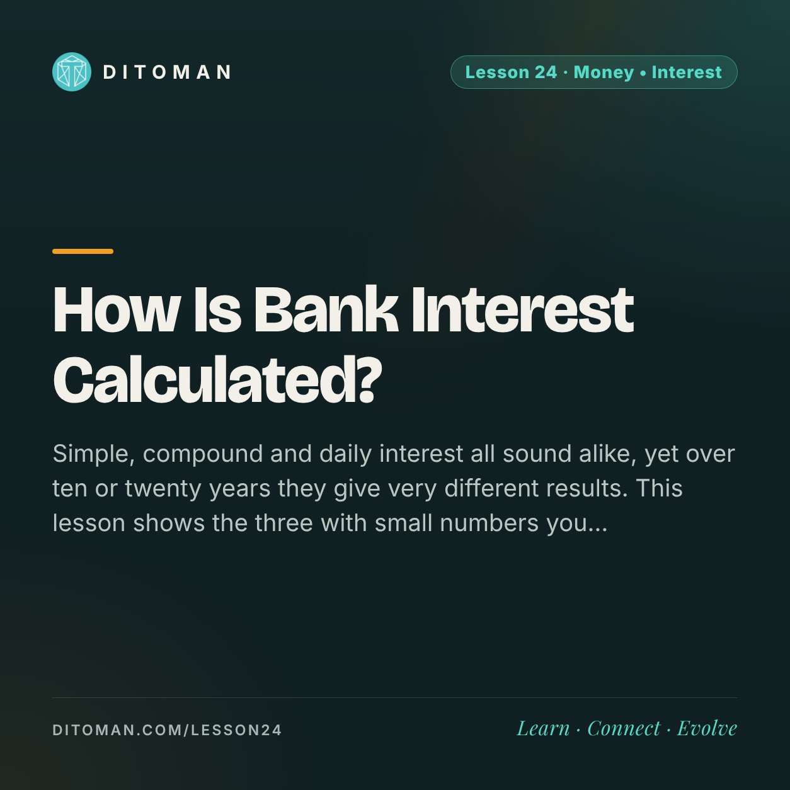

Como se calcula o juro bancário?
سود بانکی چطور حساب میشود؟
Juro simples, composto e diário parecem iguais, mas ao fim de dez ou vinte anos dão resultados muito diferentes. Esta lição mostra os três com números pequenos que pode verificar à mão.
سود ساده، مرکب و روزشمار شبیه هم به نظر میرسند، ولی در ده یا بیست سال نتیجههای خیلی متفاوتی میدهند. این درس هر سه را با عددهای کوچکی نشان میدهد که میشود با دست حساب کرد.
Conteúdo da lição
محتوای درس
Leia a lição em inglês ou persa.
درس را به فارسی یا انگلیسی بخوانید.
Põe 1 000 unidades numa conta que paga 5% ao ano. Ao fim de um ano tem 1 050. Todos concordam. O desacordo começa no segundo ano.
Os 5% aplicam-se outra vez a 1 000 ou a 1 050? Essa pequena pergunta é toda a diferença entre juro simples e composto.
01. Juro simples
Com juro simples, a taxa aplica-se sempre ao valor original. O juro é 5% de 1 000, ou seja 50, todos os anos.
Após 10 anos: 1 000 + 10 × 50 = 1 500. Após 20 anos: 2 000. O saldo cresce em linha reta.
02. Juro composto
O Consumer Financial Protection Bureau dos EUA explica assim: juro composto é quando ganha juros sobre o dinheiro que poupou e sobre os juros que foi ganhando pelo caminho.
O seu próprio exemplo é 1 000 dólares a 5% ao ano: 1 050 ao fim do primeiro ano e 1 102,50 ao fim do segundo. Os 2,50 a mais são juro sobre juro.
| Ano | Simples | Composto |
|---|---|---|
| 1 | 1,050 | 1,050 |
| 2 | 1,100 | 1,102.50 |
| 10 | 1,500 | 1,628.89 |
| 20 | 2,000 | 2,653.30 |
03. O que o tempo faz à diferença
A diferença começa ínfima e depois cresce. Aos mesmos 5% ao ano:
10 anos: simples 1 500, composto cerca de 1 628,89.
20 anos: simples 2 000, composto cerca de 2 653,30.
Nada na taxa mudou. Só mudou a base a que a taxa se aplica. O CFPB acrescenta que uma capitalização mais frequente, uma taxa mais alta ou reforçar o capital fazem a poupança crescer mais depressa.
04. Juro diário
Algumas contas e empréstimos calculam o juro ao dia. Com juro simples diário a 5% ao ano, um dia rende 1 000 × 0,05 ÷ 365, e 30 dias rendem cerca de 4,11.
O cálculo diário importa porque mostra quanto tempo o dinheiro esteve onde. O dinheiro que chega no fim do mês rende menos dias, e um empréstimo pago tarde custa mais dias.
05. Taxa versus rendimento
Uma taxa anunciada como 5% ao ano, capitalizada mensalmente, não dá exatamente 5% no ano. Como os juros de cada mês rendem juros, o resultado anual efetivo é cerca de 5,12%.
Quando comparar duas ofertas, compare-as na mesma base: o mesmo período e a mesma capitalização. Uma taxa de destaque por si só não chega.
06. A mesma matemática joga contra si
O juro composto funciona nos dois sentidos. Na poupança ajuda; numa dívida é a razão por que o saldo pode crescer mesmo quando paga alguma coisa. A lição 19 mostrou como os custos das prestações se acumulam, e este é o motor por baixo.
07. A inflação também se compõe
A taxa do banco só diz quanto cresce o número. A lição 12 explica que os preços também se compõem. Se o seu dinheiro cresce mesmo depende do juro comparado com a subida dos preços, não só do juro.
O que retirar disto
O juro simples aplica-se ao valor original; o juro composto aplica-se ao valor mais os juros passados.
A 5% sobre 1 000 durante 20 anos: 2 000 em juro simples contra cerca de 2 653 em composto.
Compare ofertas no mesmo período e com a mesma capitalização.
A capitalização ajuda quem poupa e prejudica quem deve.
O juro pouco significa se não o comparar com a subida dos preços.
هزار واحد در حسابی میگذارید که سالی ۵٪ سود میدهد. بعد از یک سال ۱٬۰۵۰ دارید. همه با این موافقاند. اختلاف از سال دوم شروع میشود.
آیا ۵٪ دوباره روی ۱٬۰۰۰ حساب میشود یا روی ۱٬۰۵۰؟ همین پرسش کوچک تمام فرق سود ساده و سود مرکب است.
۰۱. سود ساده
در سود ساده، نرخ همیشه روی مبلغ اولیه اعمال میشود. سود هر سال ۵٪ از ۱٬۰۰۰ است، یعنی ۵۰.
بعد از ۱۰ سال: ۱٬۰۰۰ + ۱۰ × ۵۰ = ۱٬۵۰۰. بعد از ۲۰ سال: ۲٬۰۰۰. موجودی در خط راست بالا میرود.
۰۲. سود مرکب
ادارهی حمایت مالی از مصرفکنندهی آمریکا (CFPB) اینطور میگوید: سود مرکب یعنی هم روی پولی که پسانداز کردهاید سود میگیرید و هم روی سودی که در مسیر به دست آوردهاید.
مثال خودش ۱٬۰۰۰ دلار با سود سالانهی ۵٪ است: بعد از سال اول ۱٬۰۵۰ و بعد از سال دوم ۱٬۱۰۲٫۵۰. آن ۲٫۵۰ اضافه، سودِ سود است.
| سال | ساده | مرکب |
|---|---|---|
| ۱ | ۱٬۰۵۰ | ۱٬۰۵۰ |
| ۲ | ۱٬۱۰۰ | ۱٬۱۰۲٫۵۰ |
| ۱۰ | ۱٬۵۰۰ | ۱٬۶۲۸٫۸۹ |
| ۲۰ | ۲٬۰۰۰ | ۲٬۶۵۳٫۳۰ |
۰۳. زمان با این فاصله چه میکند
فاصله کوچک شروع میشود و بعد بزرگ میشود. با همان ۵٪ در سال:
۱۰ سال: ساده ۱٬۵۰۰، مرکب حدود ۱٬۶۲۸٫۸۹.
۲۰ سال: ساده ۲٬۰۰۰، مرکب حدود ۲٬۶۵۳٫۳۰.
نرخ هیچ تغییری نکرد. فقط پایهای که نرخ رویش اعمال میشود عوض شد. CFPB اضافه میکند که مرکبشدن مکررتر، نرخ بالاتر، یا اضافهکردن به اصل پول، همه رشد پسانداز را سریعتر میکنند.
۰۴. سود روزشمار
بعضی حسابها و وامها سود را روزانه حساب میکنند. با سود سادهی روزشمار و نرخ سالانهی ۵٪، هر روز ۱٬۰۰۰ × ۰٫۰۵ ÷ ۳۶۵ سود میآورد و ۳۰ روز حدود ۴٫۱۱.
حساب روزانه از این جهت مهم است که نشان میدهد پول چند روز کجا بوده. پولی که اواخر ماه میرسد روزهای کمتری سود میگیرد و وامی که دیر پرداخت شود روزهای بیشتری هزینه دارد.
۰۵. نرخ در برابر بازده
نرخی که «۵٪ در سال با مرکبشدن ماهانه» اعلام میشود، در طول سال دقیقاً ۵٪ نمیدهد. چون سود هر ماه خودش سود میآورد، نتیجهی مؤثر سالانه حدود ۵٫۱۲٪ است.
وقتی دو پیشنهاد را مقایسه میکنید، آنها را روی یک مبنا بسنجید: همان دوره و همان نوع مرکبشدن. نرخ تبلیغاتی بهتنهایی کافی نیست.
۰۶. همین ریاضی علیه شما هم کار میکند
سود مرکب در هر دو جهت کار میکند. روی پسانداز مفید است؛ روی بدهی دلیل آن است که موجودی حتی وقتی چیزی میپردازید ممکن است بزرگ شود. درس ۱۹ نشان داد هزینهی قسطها چطور انباشته میشود و این همان موتور زیر آن است.
۰۷. تورم هم مرکب میشود
نرخ بانکی فقط رشد عدد را میگوید. درس ۱۲ توضیح میدهد قیمتها هم مرکب میشوند. اینکه پولتان واقعاً رشد میکند یا نه، به مقایسهی سود با افزایش قیمتها بستگی دارد، نه به سود بهتنهایی.
چه برداشتی کنیم
سود ساده روی مبلغ اولیه اعمال میشود؛ سود مرکب روی مبلغ بهعلاوهی سودهای گذشته.
با ۵٪ روی ۱٬۰۰۰ در ۲۰ سال: ۲٬۰۰۰ ساده در برابر حدود ۲٬۶۵۳ مرکب.
پیشنهادها را روی یک دوره و یک نوع مرکبشدن مقایسه کنید.
مرکبشدن به نفع پساندازکننده و به ضرر بدهکار است.
سود بدون مقایسه با افزایش قیمتها معنای کمی دارد.
Duas lições relacionadas
دو درس مرتبط
A lição 12 mostra porque o juro deve ser comparado com a subida dos preços. A lição 19 mostra o lado do custo: quanto somam realmente as prestações.
درس ۱۲ نشان میدهد چرا سود را باید با افزایش قیمتها مقایسه کرد. درس ۱۹ سمت هزینه را نشان میدهد: قسطها در نهایت چقدر میشوند.
Conceitos-chave
مفاهیم کلیدی
- Capital
- Taxa de juro
- Juro simples
- Juro composto
- Juro diário
- Rendimento anual efetivo
- Frequência de capitalização
- اصل پول
- نرخ سود
- سود ساده
- سود مرکب
- سود روزشمار
- بازده مؤثر سالانه
- تعداد دفعات مرکبشدن
Objetivos de aprendizagem
اهداف یادگیری
- Calcule o juro simples à mão.
- Explique o juro composto como juro sobre juro.
- Compare os resultados a 10 e a 20 anos com a mesma taxa.
- Calcular um valor de juro diário.
- Compare duas ofertas na mesma base.
- سود ساده را با دست حساب کنید.
- سود مرکب را بهعنوان سودِ سود توضیح بدهید.
- نتیجهی ۱۰ و ۲۰ ساله را با یک نرخ مقایسه کنید.
- سود روزانه را حساب کنید.
- دو پیشنهاد را روی یک مبنا مقایسه کنید.
Questionário
آزمونک
Veja o que ficou consigo. A resposta está por baixo de cada pergunta.
ببین چه چیزی در ذهنت مانده. پاسخ زیر هر پرسش آمده است.
Pergunta 1
پرسش ۱
1 000 a 5% de juro simples durante 10 anos dá:
۱٬۰۰۰ با سود سادهی ۵٪ در ۱۰ سال میشود:
A. 1,500
الف. ۱٬۵۰۰
B. 1,628.89
ب. ۱٬۶۲۸٫۸۹
C. 1,050
ج. ۱٬۰۵۰
Resposta certa: A
پاسخ درست: الف
Pergunta 2
پرسش ۲
O que faz o juro compor-se?
چه چیزی سود را مرکب میکند؟
A. Ganha-se juro também sobre juros anteriores
الف. روی سودهای قبلی هم سود میآید
B. O banco sobe a taxa todos os anos
ب. بانک هر سال نرخ را بالا میبرد
C. A conta é fechada antecipadamente
ج. حساب زودتر بسته میشود
Resposta certa: A
پاسخ درست: الف
Pergunta 3
پرسش ۳
1 000 a 5% compostos durante 20 anos dá cerca de:
۱٬۰۰۰ با ۵٪ مرکب در ۲۰ سال حدود چقدر میشود؟
A. 2,000
الف. ۲٬۰۰۰
B. 2,653
ب. ۲٬۶۵۳
C. 5,000
ج. ۵٬۰۰۰
Resposta certa: B
پاسخ درست: ب
Pergunta 4
پرسش ۴
Aproximadamente quanto juro simples rendem 1 000 a 5% ao ano em 30 dias?
تقریباً ۱٬۰۰۰ با سود سادهی ۵٪ سالانه در ۳۰ روز چقدر سود میآورد؟
A. Cerca de 4,11
الف. حدود ۴٫۱۱
B. Cerca de 50
ب. حدود ۵۰
C. Cerca de 0,41
ج. حدود ۰٫۴۱
Resposta certa: A
پاسخ درست: الف
Pergunta 5
پرسش ۵
Porque comparar ofertas na mesma base de capitalização?
چرا پیشنهادها را روی یک مبنای مرکبشدن مقایسه کنیم؟
A. Uma taxa anunciada sozinha esconde o resultado anual
الف. نرخ تبلیغاتی بهتنهایی نتیجهی سالانه را پنهان میکند
B. Os bancos exigem-no
ب. بانکها الزام میکنند
C. Aumenta a taxa
ج. نرخ را بالاتر میکند
Resposta certa: A
پاسخ درست: الف
Fontes
منابع
A definição e os dois primeiros anos vêm do CFPB. Os valores a 10 anos, 20 anos, diário e de rendimento efetivo são cálculos nossos (1 000 × 1,05^10 e 1,05^20; 1 000 × 0,05 × 30 ÷ 365; capitalização mensal de 5%), arredondados. Orientação geral, não aconselhamento pessoal.
تعریف و دو سال اول از CFPB است. عددهای ۱۰ ساله، ۲۰ ساله، روزشمار و بازده مؤثر حساب خودمان است (۱٬۰۰۰ × ۱٫۰۵ به توان ۱۰ و ۲۰؛ ۱٬۰۰۰ × ۰٫۰۵ × ۳۰ ÷ ۳۶۵؛ مرکبشدن ماهانهی ۵٪) و گرد شده. راهنمای عمومی است، نه مشاورهی شخصی.
با هم دنبال میکنیمAcompanhe
As novas lições são anunciadas primeiro nos canais do Ditoman.
درسهای تازه اول در کانالهای دیتومان معرفی میشوند.